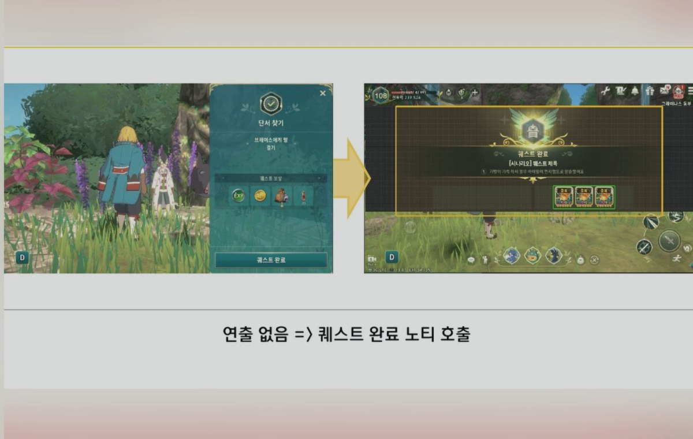
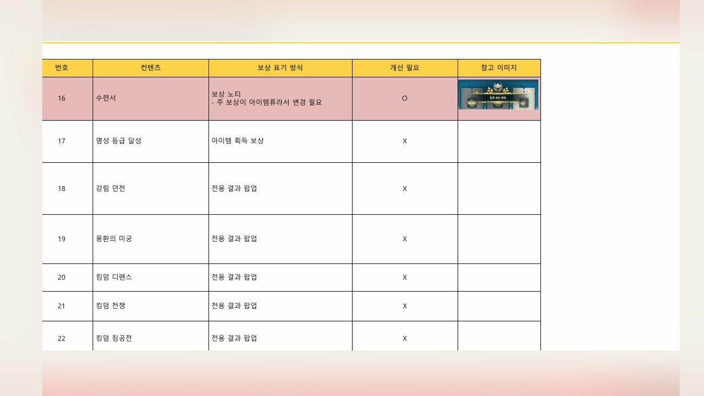
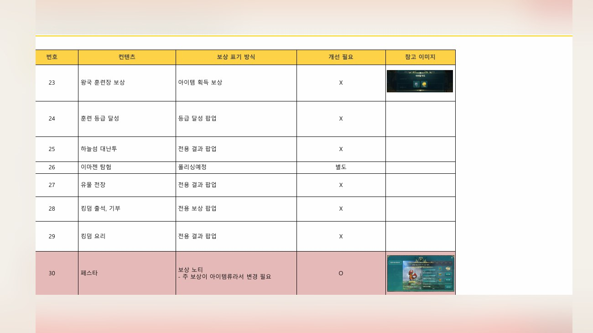
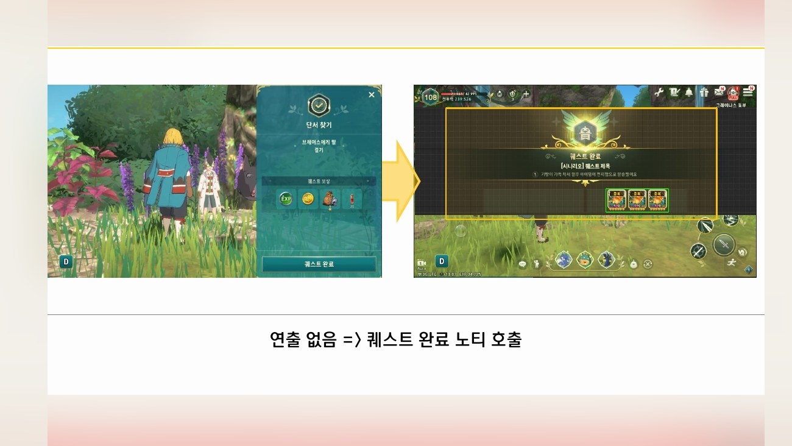
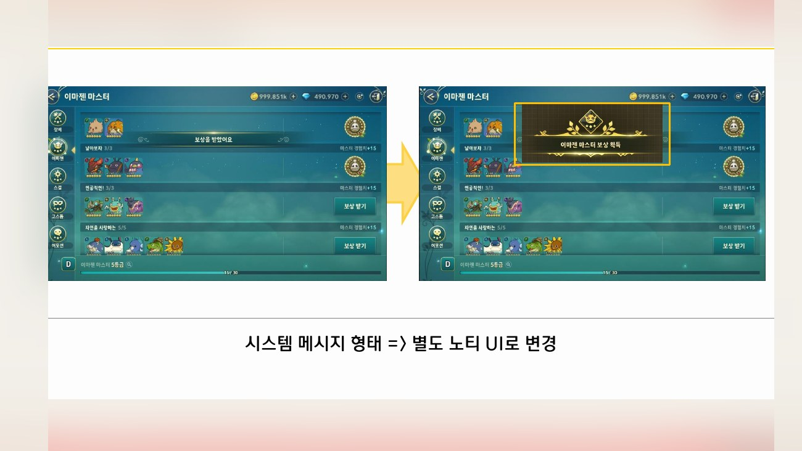
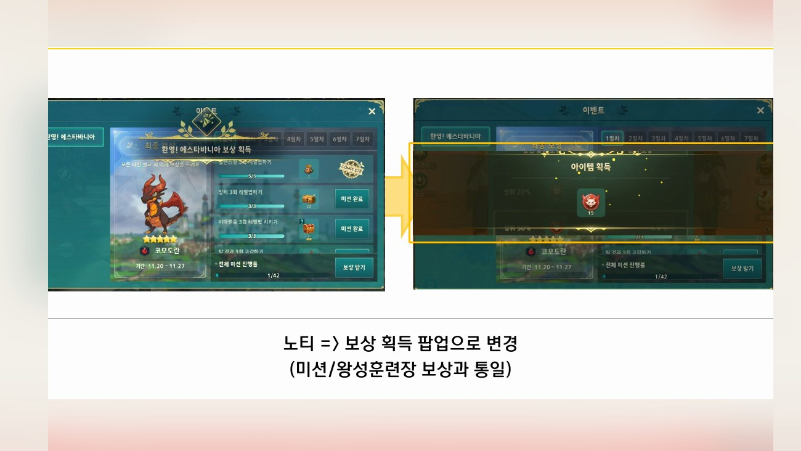
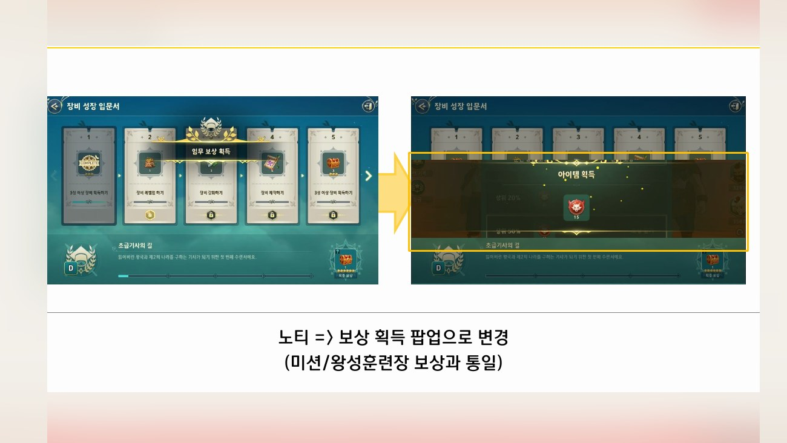
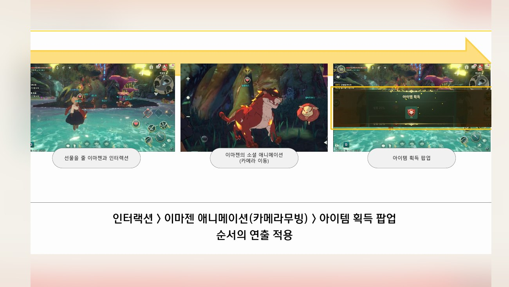

Planning Context
어떤 기획이었나
- 콘텐츠마다 보상 표현이 달라지면 유저는 같은 획득 경험을 다르게 해석하고, 개발/QA도 기준을 확인하기 어려워집니다.
- 보상 팝업, 리스트 표시, 랜덤 보상, 획득 결과 등 공통 UX 기준이 필요했습니다.
ProjectN · Reward UX Policy
여러 콘텐츠에서 반복되는 보상 획득, 표시, 팝업, 공용 규칙을 정리한 UX 정책/공용화 사례입니다.

Planning Context
Process
Deliverables
Result
콘텐츠별로 흩어질 수 있는 보상 표시 기준을 공용 UX 정책으로 묶어 일관된 보상 경험을 만들 수 있게 했습니다.
Deliverable Captures
원본 문서는 포함하지 않고, 포트폴리오 확인용으로 일부 페이지만 이미지화했습니다. 슬라이드 마스터/상하단 영역은 흐림 처리했습니다.






